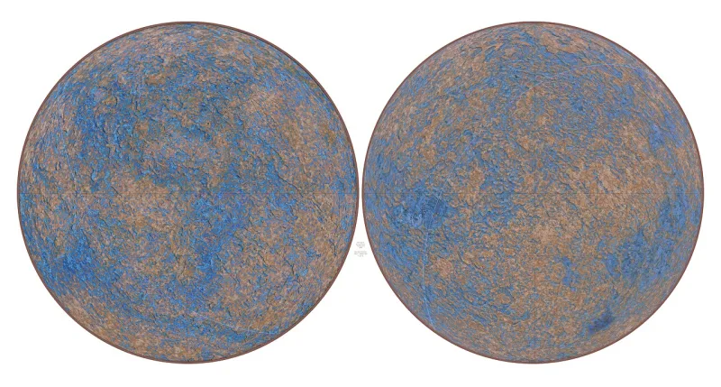
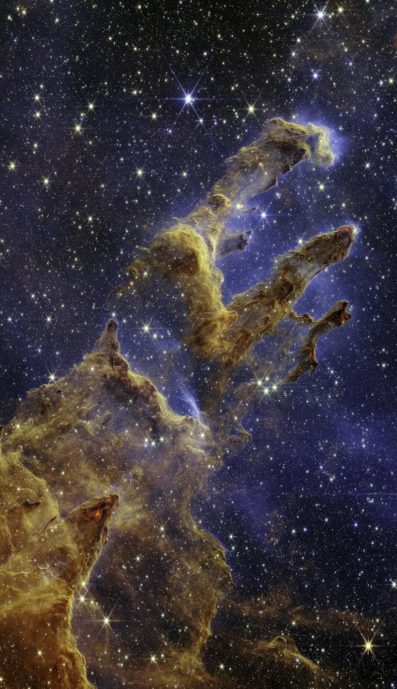

Serious philosophers argue this both ways. Say so before your friend does.
Physics has constants that are not derived from anything. Change some of them slightly and no stars form.
No chemistry. No universe that lasts.
The cosmological constant sits at about 1 part in 10^120 of its natural value.
This is not a creationist talking point. Fred Hoyle was an atheist when he wrote it: "A common sense interpretation of the facts suggests that a superintellect has monkeyed with physics." Roger Penrose put the odds of the universe's low-entropy start at 1 in 10^10^123.
Martin Rees built a book around six such numbers.
The multiverse. If huge numbers of universes exist with different constants, life can only turn up in a fit one.
No tuner needed. Inflation gives that idea its own support.
Sean Carroll presses harder. We have no way to measure how likely a constant is, so "improbable" may mean nothing here.
And why would an all-powerful God need tuned physics at all?
The machine that makes the universes would need tuned laws itself. And this kind of reasoning has a known bug, named after Boltzmann brains.
That reopens the debate. It does not close it.
The best of the God arguments, and still contested. The data is not in doubt.
Luke Barnes and Geraint Lewis defend the design reading in peer-reviewed work. The multiverse is a real rival, not a dodge.
Note that it also posits things we cannot see. Then let the other person feel how alike the two moves are.
"The constants are on a knife's edge. Both our answers go past what we can see.
Mine just goes a different way."


Many universes, they say, and life turns up in the one that allows it.
The answer is many universes, plus a filter. If huge numbers of universes exist with different constants, life can only turn up in one that allows it. No tuner is needed. And inflation gives that idea its own support.
Sean Carroll presses harder. We have no way to measure how likely a constant is, so 'improbable' may mean nothing here. And under theism, why would God need tuned physics at all? An all-powerful being could keep life going in any universe. On that reading, the tuning is a mark of life arising by natural means.
The theist reply has force. The machine that makes the universes would itself need tuned laws, and this kind of reasoning has a known bug, named after Boltzmann brains. But that reply reopens the debate rather than closing it.
Contested, leaning strong: the data holds, but the multiverse is a real rival.
The strongest of the existence arguments. The data is uncontested. Luke Barnes and Geraint Lewis defend the design reading in peer-reviewed philosophy of physics. But the multiverse is a genuine rival, not a dodge, even though it faces its own regress.
Grade it contested, leaning strong. Lead with the numbers, and with the witnesses who are not theists: Hoyle, Penrose, Rees. Then grant that the multiverse is a serious rival. Note that it too posits things beyond the evidence, and that we cannot see them either. Let the skeptic feel the symmetry.